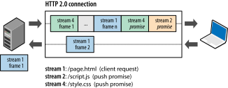

Преди да започнете четенето на реферата, искам да кажа, че съм се въздържал от превод на основните
термини, свързани с
HTTP/2, понеже ми звучат неестествено, а и не мисля, че има много смисъл. Както гласи една поговорка:
- Преводите са като жените - ако са хубави, не са вярни, а ако са вярни, не са хубави.
1. Какво е HTTP?

HTTP е мрежов протокол от приложния слой на OSI модела, служещ за обмяна на информация и ресурси в компютърни
мрежи. Доказва се като много успешен през годините. С времето обаче се оказва, че начинът, по който по-старите
версии на HTTP (1.0, 1.1) използват транспортния слой под себе си, е неефикасен и не отговаря на нуждите на
модерния свят. Казано по-просто, мрежата, по която се пренасят HTTP съобщенията се натоварва излишно много и
това води до проблеми.
2. Какви всъщност са недостатъците на HTTP/1.1 и HTTP/1.0?
За да бъда по-конкретен, нека да се върнем малко в историята.
Първите версии на HTTP са били създадени, търсейки простота. За жалост, тази простота е била за сметка на
производителността на приложенията. Какви всъщост са проблемите?
- HTTP/1.0 позволява само и единствено една заявка да преминава през изградена TCP конекция. Това очевидно
струва доста скъпо - всеки път, когато изпращаме заявка, трябва да преминаваме през изграждане на TCP връзка
- т.нар. three-way handshake.
HTTP/1.1 частично се справи с този проблем чрез HTTP pipelining. Накратко това ни
позволява да изпращаме
няколко заявки през една и съща TCP конекция (както се вижда на втората снимка - заявката на HTTP/1.1
изисква снимка на къщата и колата, преди да се сложи край на конекцията). Все още обаче го има проблема с
Head-of-line blocking (HOL
blocking).
Заради това клиентите, използващи HTTP/1.x, които искат да изпращат много заявки към
даден сървър, са принудени да изграждат няколко TCP конекции към сървъра, за да постигнат конкурентност
на заявките (търсейки намаляване на латенцията).


-
HTTP хедърите (header fields) доста често са многословни и повтарящи се, което причинява ненужно
натоварване на мрежовия трафик, както и препълване на т.нар.
TCP congestion
window доста бързо.
Тези проблеми не са били фатални, но с времето уеб приложенията са започнали да разширяват обхвата си, да стават
по-сложни, както и по-важни за нас, хората. По-този начин отежниха задачата на самите
потребителите на уеба, както и на уеб разработчиците. Точно това се опитва да олекоти HTTP/2.
HTTP/2 се справя с тези проблеми, без да променя семантиката на протокола. Просто оптимизира начина, по който
съобщенията се пренасят по транспортния слой/мрежата. Оптимизаците включват мултиплексиране на заявки и
отговори (requests and responses) в една TCP конекция посредством т.нар. streams, както и
приоритизирането на заявки - това позволява
по-важните заявки да приключват по-бързо, което в крайна сметка подобрява производителността.
В крайна сметка HTTP/2 щади повече мрежата, защото се използват по-малко TCP конекции в сравнение с HTTP/1.x.
Също така HTTP/2 обработва съобщенията по-ефикасно, използвайки т.нар. binary framing layer

3. Какво е HTTP/2?
HTTP/2 е оптимизация на HTTP/1.1, позволяваща по-добро използване на мрежовите ресурси. Основната цел му е чрез
нови способи за пренос на данни по мрежата, да се ускори времето за зареждане на дадена уеб страница.
Предимствата на HTTP/2 са неща като по-добро управление на връзката, ниско потребление на трафик, бързодействие.
Семантично по никакъв начин не се различава от HTTP/1.1. Всички основни концепции, като HTTP methods, status
codes, URIs, headers fields, си остават същите.
Разликата е в това как самите данни се форматират и пренасят между клиента и сървъра.
В резултат на това всички приложения, които
използват HTTP/1.1 могат да преминат към HTTP/2 без модификации.
Основни начини, по които HTTP 2 постига по-добра ефикасност:
- Request and response multiplexing in one TCP connection
- Compression of HTTP header fields
- Support for request prioritization
- Server push
За да могат да се имплементират изброените по-горе feature-и, са използвани много подобрения на самия
протокол - нов начин за flow control, error handling и upgrade mechanisms. Но гореописаните 4 неща са
най-важните, които трябва да бъдат разбрани.
4. Binary framing layer
В основата на подобренията на HTTP 2 е споменатият по-горе binary framing layer, който определя как
съобщенията
се изграждат и трансферират между клиента и сървъра.

Думата "layer" (слой) се отнася до изборът да се използва нов механизъм за кодиране на съобщенията между
socket interface-а и
HTTP API-то, с което нашите приложения работят. Семантиката на HTTP - verbs, methods и headers, не е засегната,
но начинът, по който
се кодира, докато се пренася по мрежата е различен. За разлика от HTTP/1.x, където имаме обикновен текст
разделен с нови редове,
всичката комуникация в HTTP/2 е разделена на по-малки messages и frames, като всяко от тях е кодирано в двоичен
(binary) формат.
В резултат на този механизъм за кодиране, и клиентът, и сървърът трябва да 'знаят' и използват този механизъм,
за да могат да се
разбират. HTTP/1.x клиент няма да може да се разбере със сървър, поддържащ единствено HTTP/2, както и обратното.
За щастие, нашите уеб
приложения изобщо не е нужно да разбират за всички тези промени, тъй като HTTP клиентите и сървърите вършат
работата 'зад завесите'.
5. Streams, messages, and frames
The introduction of the new binary framing mechanism changes how the data is exchanged between the client and
server. To describe this process, let’s familiarize ourselves with the HTTP/2 terminology:
Stream: A bidirectional flow of bytes within an established connection, which may carry one or more messages.
Message: A complete sequence of frames that map to a logical request or response message.
Frame: The smallest unit of communication in HTTP/2, each containing a frame header, which at a minimum
identifies the stream to which the frame belongs.
The relation of these terms can be summarized as follows:
All communication is performed over a single TCP connection that can carry any number of bidirectional streams.
Each stream has a unique identifier and optional priority information that is used to carry bidirectional
messages.
Each message is a logical HTTP message, such as a request, or response, which consists of one or more frames.
The frame is the smallest unit of communication that carries a specific type of data—e.g., HTTP headers, message
payload, and so on. Frames from different streams may be interleaved and then reassembled via the embedded
stream identifier in the header of each frame.

In short, HTTP/2 breaks down the HTTP protocol communication into an exchange of binary-encoded frames, which
are then mapped to messages that belong to a particular stream, all of which are multiplexed within a single TCP
connection. This is the foundation that enables all other features and performance optimizations provided by the
HTTP/2 protocol.
6. Request and response multiplexing
With HTTP/1.x, if the client wants to make multiple parallel requests to improve performance, then multiple TCP
connections must be used (see Using Multiple TCP Connections ). This behavior is a direct consequence of the
HTTP/1.x delivery model, which ensures that only one response can be delivered at a time (response queuing) per
connection. Worse, this also results in head-of-line blocking and inefficient use of the underlying TCP
connection.
The new binary framing layer in HTTP/2 removes these limitations, and enables full request and response
multiplexing, by allowing the client and server to break down an HTTP message into independent frames,
interleave them, and then reassemble them on the other end.

The snapshot captures multiple streams in flight within the same connection. The client is transmitting a DATA
frame (stream 5) to the server, while the server is transmitting an interleaved sequence of frames to the client
for streams 1 and 3. As a result, there are three parallel streams in flight.
The ability to break down an HTTP message into independent frames, interleave them, and then reassemble them on
the other end is the single most important enhancement of HTTP/2. In fact, it introduces a ripple effect of
numerous performance benefits across the entire stack of all web technologies, enabling us to:
Interleave multiple requests in parallel without blocking on any one.
Interleave multiple responses in parallel without blocking on any one.
Use a single connection to deliver multiple requests and responses in parallel.
Remove unnecessary HTTP/1.x workarounds (see Optimizing for HTTP/1.x, such as concatenated files, image sprites,
and domain sharding).
Deliver lower page load times by eliminating unnecessary latency and improving utilization of available network
capacity.
And much more…
The new binary framing layer in HTTP/2 resolves the head-of-line blocking problem found in HTTP/1.x and
eliminates the need for multiple connections to enable parallel processing and delivery of requests and
responses. As a result, this makes our applications faster, simpler, and cheaper to deploy.
7. Stream prioritization
Once an HTTP message can be split into many individual frames, and we allow for frames from multiple streams to
be multiplexed, the order in which the frames are interleaved and delivered both by the client and server
becomes a critical performance consideration. To facilitate this, the HTTP/2 standard allows each stream to have
an associated weight and dependency:
Each stream may be assigned an integer weight between 1 and 256.
Each stream may be given an explicit dependency on another stream.
The combination of stream dependencies and weights allows the client to construct and communicate a
"prioritization tree" that expresses how it would prefer to receive responses. In turn, the server can use this
information to prioritize stream processing by controlling the allocation of CPU, memory, and other resources,
and once the response data is available, allocation of bandwidth to ensure optimal delivery of high-priority
responses to the client.

A stream dependency within HTTP/2 is declared by referencing the unique identifier of another stream as its
parent; if the identifier is omitted the stream is said to be dependent on the "root stream". Declaring a stream
dependency indicates that, if possible, the parent stream should be allocated resources ahead of its
dependencies. In other words, "Please process and deliver response D before response C".
Streams that share the same parent (in other words, sibling streams) should be allocated resources in proportion
to their weight. For example, if stream A has a weight of 12 and its one sibling B has a weight of 4, then to
determine the proportion of the resources that each of these streams should receive:
Sum all the weights: 4 + 12 = 16
Divide each stream weight by the total weight: A = 12/16, B = 4/16
Thus, stream A should receive three-quarters and stream B should receive one- quarter of available resources;
stream B should receive one-third of the resources allocated to stream A. Let’s work through a few more hands-on
examples in the image above. From left to right:
Neither stream A nor B specifies a parent dependency and are said to be dependent on the implicit "root stream";
A has a weight of 12, and B has a weight of 4. Thus, based on proportional weights: stream B should receive
one-third of the resources allocated to stream A.
Stream D is dependent on the root stream; C is dependent on D. Thus, D should receive full allocation of
resources ahead of C. The weights are inconsequential because C’s dependency communicates a stronger preference.
Stream D should receive full allocation of resources ahead of C; C should receive full allocation of resources
ahead of A and B; stream B should receive one-third of the resources allocated to stream A.
Stream D should receive full allocation of resources ahead of E and C; E and C should receive equal allocation
ahead of A and B; A and B should receive proportional allocation based on their weights.
As the above examples illustrate, the combination of stream dependencies and weights provides an expressive
language for resource prioritization, which is a critical feature for improving browsing performance where we
have many resource types with different dependencies and weights. Even better, the HTTP/2 protocol also allows
the client to update these preferences at any point, which enables further optimizations in the browser. In
other words, we can change dependencies and reallocate weights in response to user interaction and other
signals.
Note: Stream dependencies and weights express a transport preference, not a requirement, and as such do not
guarantee a particular processing or transmission order. That is, the client cannot force the server to process
the stream in a particular order using stream prioritization. While this may seem counterintuitive, it is in
fact the desired behavior. We do not want to block the server from making progress on a lower priority resource
if a higher priority resource is blocked.
8.One connection per origin
With the new binary framing mechanism in place, HTTP/2 no longer needs multiple TCP connections to multiplex
streams in parallel; each stream is split into many frames, which can be interleaved and prioritized. As a
result, all HTTP/2 connections are persistent, and only one connection per origin is required, which offers
numerous performance benefits.
For both SPDY and HTTP/2 the killer feature is arbitrary multiplexing on a single well congestion controlled
channel. It amazes me how important this is and how well it works. One great metric around that which I enjoy is
the fraction of connections created that carry just a single HTTP transaction (and thus make that transaction
bear all the overhead). For HTTP/1 74% of our active connections carry just a single transaction—persistent
connections just aren’t as helpful as we all want. But in HTTP/2 that number plummets to 25%. That’s a huge win
for overhead reduction. (HTTP/2 is Live in Firefox, Patrick McManus)
Most HTTP transfers are short and bursty, whereas TCP is optimized for long- lived, bulk data transfers. By
reusing the same connection, HTTP/2 is able to both make more efficient use of each TCP connection, and also
significantly reduce the overall protocol overhead. Further, the use of fewer connections reduces the memory and
processing footprint along the full connection path (in other words, client, intermediaries, and origin
servers). This reduces the overall operational costs and improves network utilization and capacity. As a result,
the move to HTTP/2 should not only reduce network latency, but also help improve throughput and reduce the
operational costs.
Note: Reduced number of connections is a particularly important feature for improving performance of HTTPS
deployments: this translates to fewer expensive TLS handshakes, better session reuse, and an overall reduction
in required client and server resources.
9.Flow control
Flow control is a mechanism to prevent the sender from overwhelming the receiver with data it may not want or be
able to process: the receiver may be busy, under heavy load, or may only be willing to allocate a fixed amount
of resources for a particular stream. For example, the client may have requested a large video stream with high
priority, but the user has paused the video and the client now wants to pause or throttle its delivery from the
server to avoid fetching and buffering unnecessary data. Alternatively, a proxy server may have fast downstream
and slow upstream connections and similarly wants to regulate how quickly the downstream delivers data to match
the speed of upstream to control its resource usage; and so on.
Do the above requirements remind you of TCP flow control? They should, as the problem is effectively identical
(see Flow Control). However, because the HTTP/2 streams are multiplexed within a single TCP connection, TCP flow
control is both not granular enough, and does not provide the necessary application-level APIs to regulate the
delivery of individual streams. To address this, HTTP/2 provides a set of simple building blocks that allow the
client and server to implement their own stream- and connection-level flow control:
Flow control is directional. Each receiver may choose to set any window size that it desires for each stream and
the entire connection.
Flow control is credit-based. Each receiver advertises its initial connection and stream flow control window (in
bytes), which is reduced whenever the sender emits a DATA frame and incremented via a WINDOW_UPDATE frame sent
by the receiver.
Flow control cannot be disabled. When the HTTP/2 connection is established the client and server exchange
SETTINGS frames, which set the flow control window sizes in both directions. The default value of the flow
control window is set to 65,535 bytes, but the receiver can set a large maximum window size (2^31-1 bytes) and
maintain it by sending a WINDOW_UPDATE frame whenever any data is received.
Flow control is hop-by-hop, not end-to-end. That is, an intermediary can use it to control resource use and
implement resource allocation mechanisms based on own criteria and heuristics.
HTTP/2 does not specify any particular algorithm for implementing flow control. Instead, it provides the simple
building blocks and defers the implementation to the client and server, which can use it to implement custom
strategies to regulate resource use and allocation, as well as implement new delivery capabilities that may help
improve both the real and perceived performance (see Speed, Performance, and Human Perception) of our web
applications.
For example, application-layer flow control allows the browser to fetch only a part of a particular resource,
put the fetch on hold by reducing the stream flow control window down to zero, and then resume it later. In
other words, it allows the browser to fetch a preview or first scan of an image, display it and allow other high
priority fetches to proceed, and resume the fetch once more critical resources have finished loading.
10. Server push
Another powerful new feature of HTTP/2 is the ability of the server to send multiple responses for a single
client request. That is, in addition to the response to the original request, the server can push additional
resources to the client, without the client having to request each one explicitly.

Note: HTTP/2 breaks away from the strict request-response semantics and enables one-to-many and server-initiated
push workflows that open up a world of new interaction possibilities both within and outside the browser. This
is an enabling feature that will have important long-term consequences both for how we think about the protocol,
and where and how it is used.
Why would we need such a mechanism in a browser? A typical web application consists of dozens of resources, all
of which are discovered by the client by examining the document provided by the server. As a result, why not
eliminate the extra latency and let the server push the associated resources ahead of time? The server already
knows which resources the client will require; that’s server push.
In fact, if you have ever inlined a CSS, JavaScript, or any other asset via a data URI (see Resource Inlining),
then you already have hands-on experience with server push. By manually inlining the resource into the document,
we are, in effect, pushing that resource to the client, without waiting for the client to request it. With
HTTP/2 we can achieve the same results, but with additional performance benefits. Push resources can be:
Cached by the client
Reused across different pages
Multiplexed alongside other resources
Prioritized by the server
Declined by the client
11. PUSH_PROMISE 101
All server push streams are initiated via PUSH_PROMISE frames, which signal the server’s intent to push the
described resources to the client and need to be delivered ahead of the response data that requests the pushed
resources. This delivery order is critical: the client needs to know which resources the server intends to push
to avoid creating duplicate requests for these resources. The simplest strategy to satisfy this requirement is
to send all PUSH_PROMISE frames, which contain just the HTTP headers of the promised resource, ahead of the
parent’s response (in other words, DATA frames).
Once the client receives a PUSH_PROMISE frame it has the option to decline the stream (via a RST_STREAM frame)
if it wants to. (This might occur for example because the resource is already in cache.) This is an important
improvement over HTTP/1.x. By contrast, the use of resource inlining, which is a popular "optimization" for
HTTP/1.x, is equivalent to a "forced push": the client cannot opt-out, cancel it, or process the inlined
resource individually.
With HTTP/2 the client remains in full control of how server push is used. The client can limit the number of
concurrently pushed streams; adjust the initial flow control window to control how much data is pushed when the
stream is first opened; or disable server push entirely. These preferences are communicated via the SETTINGS
frames at the beginning of the HTTP/2 connection and may be updated at any time.
Each pushed resource is a stream that, unlike an inlined resource, allows it to be individually multiplexed,
prioritized, and processed by the client. The only security restriction, as enforced by the browser, is that
pushed resources must obey the same-origin policy: the server must be authoritative for the provided content.
12. Header compression
Each HTTP transfer carries a set of headers that describe the transferred resource and its properties. In
HTTP/1.x, this metadata is always sent as plain text and adds anywhere from 500–800 bytes of overhead per
transfer, and sometimes kilobytes more if HTTP cookies are being used. (See Measuring and Controlling Protocol
Overhead .) To reduce this overhead and improve performance, HTTP/2 compresses request and response header
metadata using the HPACK compression format that uses two simple but powerful techniques:
It allows the transmitted header fields to be encoded via a static Huffman code, which reduces their individual
transfer size.
It requires that both the client and server maintain and update an indexed list of previously seen header fields
(in other words, it establishes a shared compression context), which is then used as a reference to efficiently
encode previously transmitted values.
Huffman coding allows the individual values to be compressed when transferred, and the indexed list of
previously transferred values allows us to encode duplicate values by transferring index values that can be used
to efficiently look up and reconstruct the full header keys and values.

As one further optimization, the HPACK compression context consists of a static and dynamic table: the static
table is defined in the specification and provides a list of common HTTP header fields that all connections are
likely to use (e.g., valid header names); the dynamic table is initially empty and is updated based on exchanged
values within a particular connection. As a result, the size of each request is reduced by using static Huffman
coding for values that haven’t been seen before, and substitution of indexes for values that are already present
in the static or dynamic tables on each side.
Note: The definitions of the request and response header fields in HTTP/2 remains unchanged, with a few minor
exceptions: all header field names are lowercase, and the request line is now split into individual :method,
:scheme, :authority, and :path pseudo-header fields.
RESOURCES: